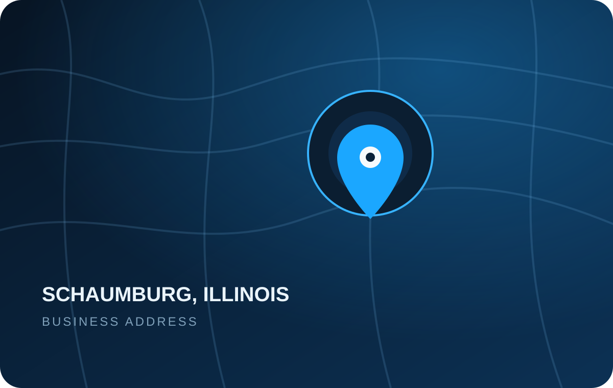

Start with the problem
We prioritize features that solve real problems and stay understandable when you actually need them.
Serevon Labs creates polished Android applications and connected-device experiences with an emphasis on reliability, thoughtful design, and everyday usefulness.

Serevon Labs LLC is an independent software development and publishing company. We build applications that help people get more from the devices they already use.
Our approach is simple: solve a real problem, make the experience clear, and keep improving the parts that matter.
Our story →
Our development decisions are guided by a few straightforward principles.
We prioritize features that solve real problems and stay understandable when you actually need them.
Predictable behavior, thoughtful safeguards, and stable workflows matter more than unnecessary novelty.
Clear choices, sensible defaults, and a design that respects your time, attention, and data.
Capture life on your terms.
ContinuCam is an Android recording application designed around dependable capture, practical controls, and a clean experience for everyday use.
Reach Serevon Labs directly by email.